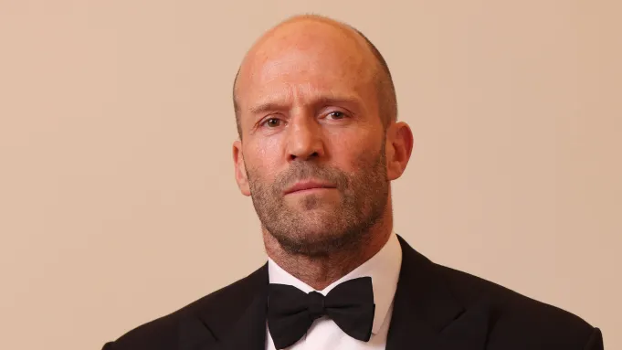
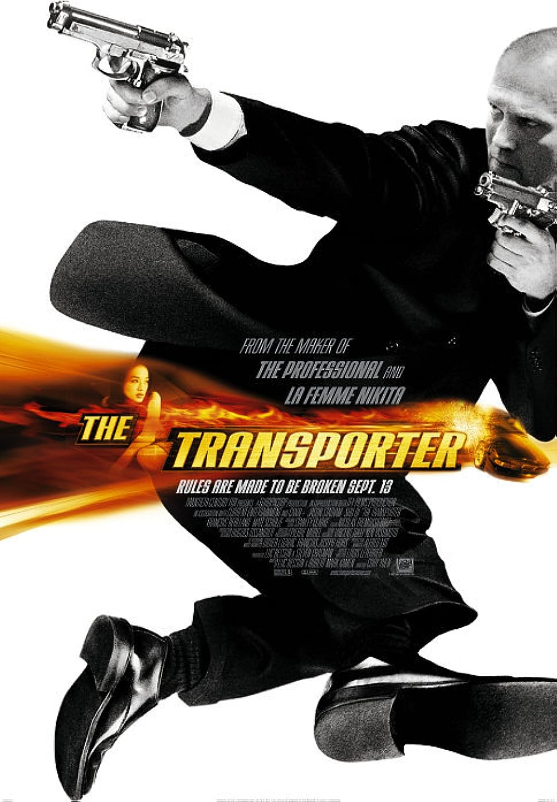
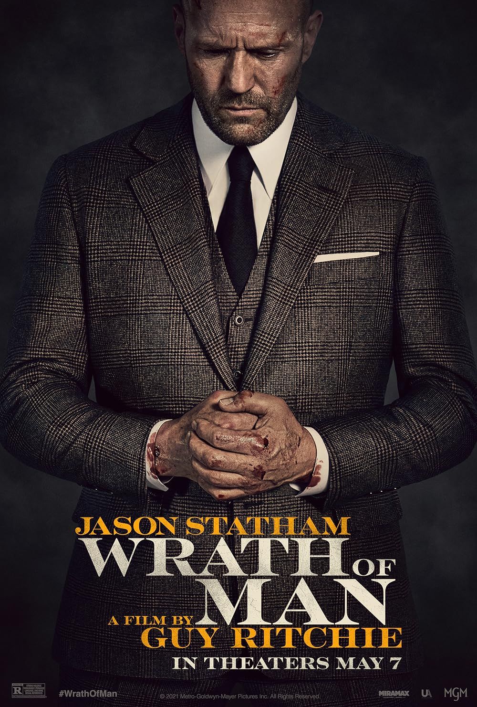
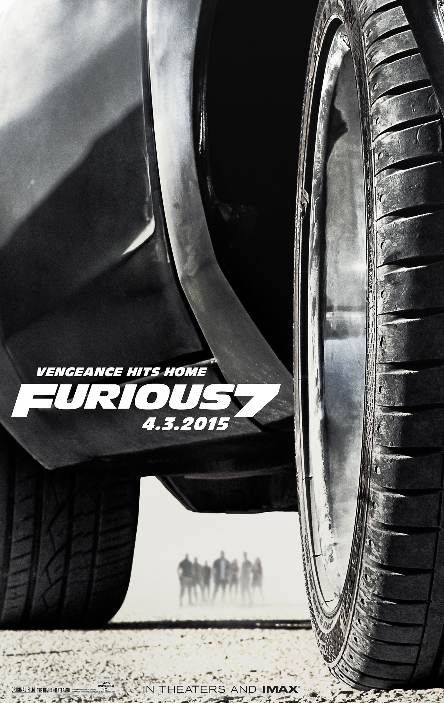
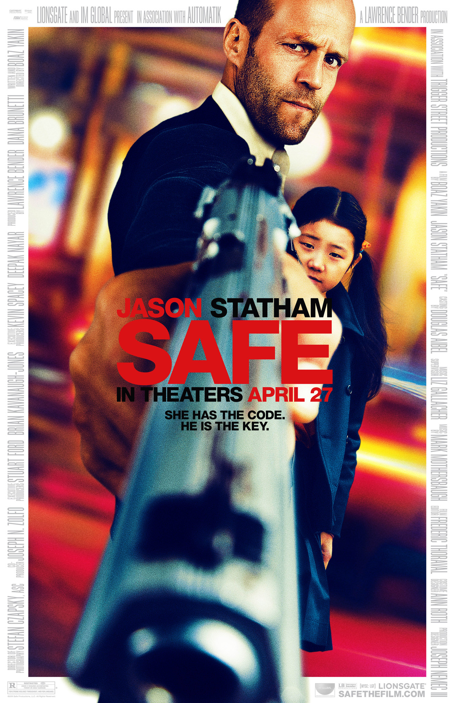

Король бойовиків та адреналінових трилерів

Джейсон Стейтем народився 26 липня 1967 року у місті Шеппертон, Англія. Спочатку він займався стрибками у воду та був членом британської команди високих досягнень, а також працював моделлю для рекламних кампаній. У 1998 році Стейтем почав акторську кар'єру завдяки співпраці з режисером Гаєм Річі, з'явившись у фільмах "Карти, гроші, два стволи" та "Великий куш". Пізніше він став відомим завдяки ролям у бойовиках та трилерах: "Перевізник", "Адреналін", "Форсаж", "Гнів людський" та багатьох інших. Він відомий своєю фізичною підготовкою та виконанням власних трюків у фільмах. Джейсон також активно тренується і підтримує високий рівень спортивної форми, що робить його ролі ще більш реалістичними та захоплюючими.

The Transporter (2002)
Професійний кур'єр доставляє небезпечні вантажі, дотримуючись суворих правил.

Гнів людський (Wrath of Man, 2021)
Водій-охоронець шукає винних у пограбуванні та розкриває свій таємний мотив помсти.

Fast & Furious 7 (2015)
Декард Шоу виступає антагоністом, що загрожує головним героям франшизи.

Safe (2012)
Колишній агент бореться з мафією, щоб врятувати дівчинку та захистити її життя.